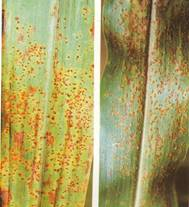
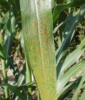

| Home |
| PEARLIMILLED |
MAJOR DISEASES |
| 1. Downy mildew |
| 2. Smut |
| 3. Rust |
| 4. Ergot or Sugary disease |
| Questions |
| Download Notes |
PEARLMILLED :: MAJOR DISEASE :: RUST
Rust - Puccinia pennisetti
Symptoms
Symptoms first appear mostly on the distal half of the lamina. The leaf soon becomes covered by uredosori which appear more on the upper surface. The pustules may be formed on leaf sheath, stem and on peduncles. Later, telial formation takes place on leaf blade, leaf sheath and stem. While brownish uredia are exposed at maturity, the black telia remain covered by the epidermis for a longer duration.
{kind=link}
|  |  |
Symptoms |
|
Pathogen
Uredospores are oval, elliptic, sparsely echinulated and pedicellate. Teliospores are dark brown in colour, two celled, cylindrical to club shaped, apex flattened, broad at top and tapering towards base. The fungus is macrocyclic producing uredial and telial stages on pearlmillet and aecial and pycnial stages on brinjal.
Favourable Conditions
- Closer spacing.
- Presence of abundant brinjal plants and other species of Solanum viz., S.torvum, S. xanthocarpumand S. pubescens.
Disease cycle
Air-borne uredospores are the primary sources. The uredial stages also occur on several species of Pennisetum, which helps in secondary spread of the pathogen.
Management
Spray with Wettable Sulphur 3 kg or Mancozeb 2 kg/ha.